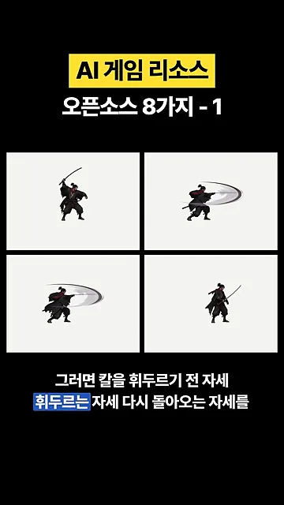
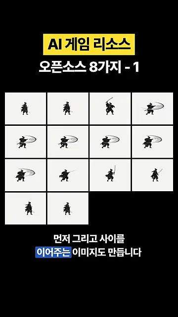
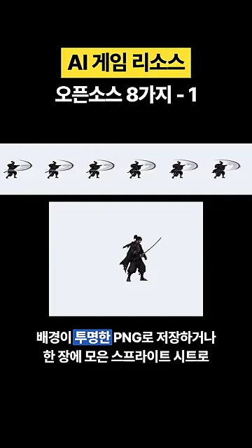
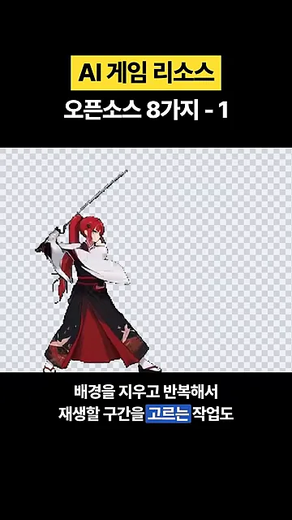
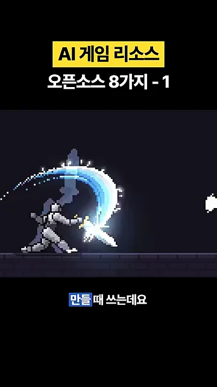
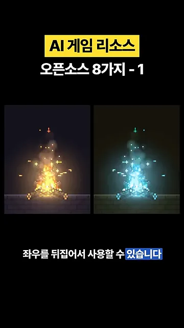
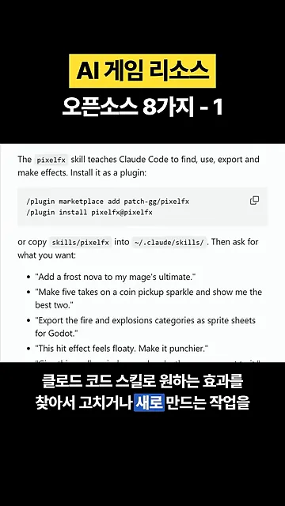
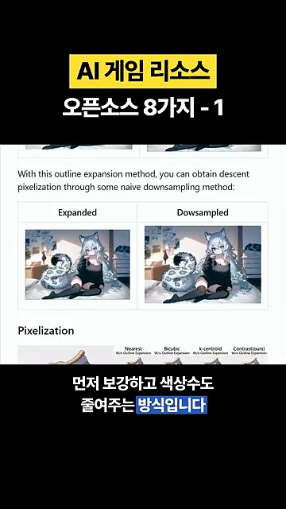
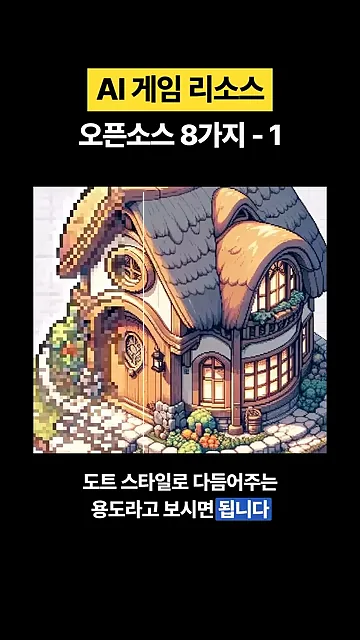
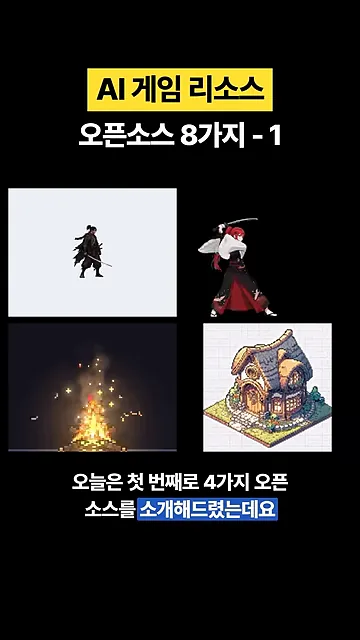

캐릭터 동작 만들기: 2dimg2motion과 sprite-gen
영상은 바이브 코딩으로 게임을 만드는 사람을 위해 리소스용 오픈소스 8개를 두 편에 나눠 소개해요. 이 편에서 다루는 앞의 4개 중 처음 둘은 캐릭터를 움직이게 만드는 도구예요.
2dimg2motion: 그림 한 장에서 동작 만들기
2dimg2motion은 Claude Code나 Codex에 얹어 쓰는 스킬이에요. 캐릭터 이미지를 주고 '이 캐릭터가 칼을 휘두르는 동작을 만들어 달라'고 요청하는 식이에요. 스킬은 먼저 키 포즈를 그려요. 아래 네 칸이 그 예시예요. 왼쪽 위가 칼을 들어 올린 휘두르기 전 자세, 오른쪽 위와 왼쪽 아래가 칼 궤적이 그려진 휘두르는 자세, 오른쪽 아래가 칼을 내리고 돌아온 자세예요.

그다음 키 포즈 사이를 잇는 중간 프레임을 채워요. 아래 화면은 칸이 4개, 4개, 4개, 2개로 모두 14칸이에요. 서 있는 자세에서 시작해 칼을 휘두르고 다시 서 있는 자세로 돌아와요. 이걸 순서대로 재생하면 애니메이션이 되고, 영상은 이 14프레임이 기본 구성이라고 해요.

결과물은 두 가지 형태로 받아요. 프레임마다 배경이 투명한 PNG(Portable Network Graphics) 낱장으로 받거나, 위쪽 띠처럼 한 장에 모은 스프라이트 시트로 받아요. 아래쪽 큰 칸은 그 프레임들을 이어 재생한 미리보기예요.

sprite-gen: AI 이미지·영상을 애니메이션으로
sprite-gen에는 길이 두 가지 있어요. 첫째는 AI로 캐릭터가 걷는 이미지를 여러 장 만든 다음, 한 장에 모아 스프라이트 시트로 만드는 길이에요. 둘째는 반대로 AI가 걷는 영상을 먼저 만들고, 거기서 필요한 장면을 한 장씩 뽑아내는 길이에요. 아래는 그 둘째 길의 재료가 되는 영상의 한 장면이에요. 빨간 머리 검객이 배경 속을 걸어가고 있어요.
sprite-gen은 여기서 배경을 지우고, 반복 재생할 구간을 고르는 일까지 도와줘요. 아래 화면의 회색 체크무늬가 배경이 투명해졌다는 표시예요. 같은 검객이 배경 없이 칼을 든 자세로만 남았어요.

효과 만들기: pixelfx
세 번째 pixelfx는 캐릭터에 붙일 불꽃, 폭발, 칼을 휘두를 때 나오는 궤적 같은 효과를 만들 때 써요. 아래 화면은 그중 칼 궤적 효과예요. 기사가 칼을 휘두르는 순간 푸른 반달 모양의 빛이 픽셀 단위로 그려져요.

기본으로 244개의 효과가 들어 있고, 색을 바꾸거나 좌우를 뒤집어 쓸 수 있어요. 아래 두 칸은 같은 모닥불 효과예요. 왼쪽은 원래의 주황색 불꽃이고, 오른쪽은 색만 하늘색으로 바꾼 버전이에요.

pixelfx가 앞의 두 도구와 다른 점은 AI 이미지 생성으로 그리지 않는다는 거예요. 코드로 픽셀을 찍어서 움직이는 효과를 만들어요. 그래서 Claude Code 스킬에 원하는 효과를 찾아 고치거나 새로 만들어 달라고 요청하면, 스킬은 그림이 아니라 그 코드를 고쳐요. 아래 화면이 스킬 설치 방법과 요청 예시가 적힌 README예요.

화면에 나온 설치 명령은 이 두 줄이에요. 플러그인 대신 저장소의 skills/pixelfx 폴더를 ~/.claude/skills/에 복사해도 된다고 적혀 있어요.
/plugin marketplace add patch-gg/pixelfx
/plugin install pixelfx@pixelfx완성한 효과는 스프라이트 시트로 뽑아서 Unity 같은 엔진에 가져다 쓰면 돼요.
도트 그림으로 다듬기: PixelOE
AI로 만든 이미지는 도트 그림처럼 보여도 확대해 보면 픽셀 크기가 제각각이거나 경계가 흐릿한 경우가 많아요. 네 번째 PixelOE는 이런 이미지를 작은 도트 형태로 정리해 줘요.
그냥 크기만 줄이는 방식이 아니에요. 줄이는 동안 중요한 윤곽이 사라지지 않도록 선을 먼저 보강하고, 그다음 색 수도 줄여요. 아래 README 화면의 Expanded 칸이 윤곽을 보강한 이미지, Downsampled 칸이 그걸 줄인 결과예요. 줄인 뒤에도 고양이 귀와 얼굴선이 살아 있어요.

아래는 집 그림에 적용한 결과예요. 영상은 세로선을 옮겨 가며 원본과 결과를 비교해요. 선의 왼쪽이 PixelOE로 정리한 부분, 오른쪽이 원래 그림이에요. 왼쪽 지붕과 문은 크기가 고른 네모 픽셀로 바뀌었어요.

네 도구 한눈에 보기
마지막 화면은 이번 편의 네 도구가 만든 결과물을 한데 모아 보여 줘요. 왼쪽 위가 2dimg2motion의 무사, 오른쪽 위가 sprite-gen의 검객, 왼쪽 아래가 pixelfx의 모닥불, 오른쪽 아래가 PixelOE의 집이에요.

| 도구 | 하는 일 | 넣는 것 | 받는 것 |
|---|---|---|---|
| 2dimg2motion | 그림 한 장으로 동작 만들기 | 캐릭터 이미지 + 동작 요청 | 14프레임 투명 PNG, 스프라이트 시트 |
| sprite-gen | AI 이미지·영상을 애니메이션으로 바꾸기 | AI로 만든 이미지 여러 장, 또는 AI 영상 | 배경을 지운 반복 애니메이션, 스프라이트 시트 |
| pixelfx | 코드로 그린 효과 쓰기·만들기 | 효과 244개 중 고르기, 또는 새 효과 요청 | 색·방향을 바꾼 효과, 스프라이트 시트 |
| PixelOE | 그림을 도트 스타일로 다듬기 | 이미 만든 그림 | 픽셀 크기가 고르고 색 수가 줄어든 도트 그림 |
영상은 마지막에 한 가지를 당부해요. 이런 방식으로 리소스를 만들었더라도 후처리와 최적화는 꼭 해 주는 게 좋다는 거예요. 나머지 4개는 2편에서 다뤄요.